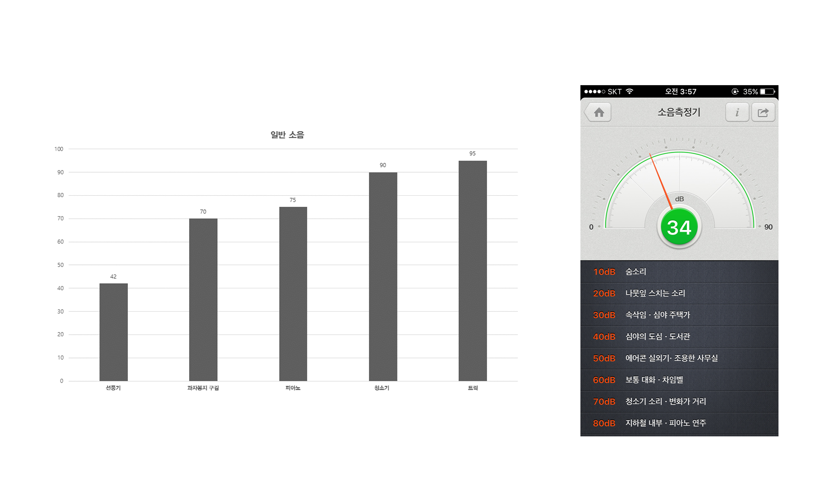
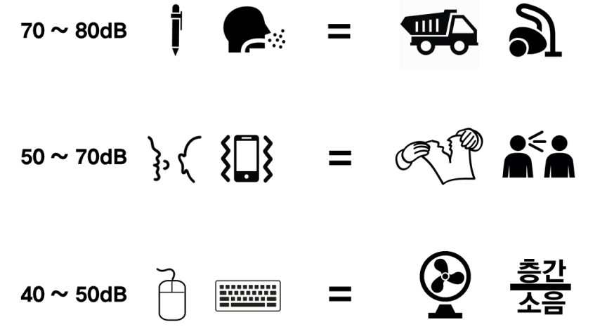

도서관을 조용하게 자습하는 공간이라고 두고 최대한 공간 소음이 비슷한 스터디룸에서 각 종 소음 유발 요소를 측정하였다.

[표2] 도서관 소음 유발요소, 실제 측정 값 및 앱에서 제시된 일반소음(기준 소리)

[표3] 도서관 소음 유발 요소 – 일반 소음(기준 소리) 비교
MEANING & LIMITATION
우리는 이번 프로젝트를 진행하면서, 중앙도서관 이용 시 마주할 수 있는 소음에 해당하는 ‘7가지의 소음(타자소리, 마우스소리, 노트북 패드 소리, 휴대폰 진동 소리, 펜 딸깍거리는 소리, 속삭이는 소리, 헛기침을 하는 소리)’의 폭이 최소 43dB에서 최대 87dB로, 생각보다 지표상에서 큰 소음에 해당하는 것을 확인 할 수 있었다. 이는 잠시 지나가는 소음이라 할지라도 그 종류에 따라 최대 트럭이 지나갈 때 나는 소리와 맞먹는 정도의 소음이 구현될 수 있다는 점을 우리에게 시사한다.
이번 프로젝트를 통해 내가 무심코 만들 수 있는 이러한 소음들이 도서관 본인 주변에 앉은 학우들에게는 충분히 큰 스트레스로 다가올 수 있다는 것을 상기하고 중앙도서관 이용자들에게도 바람직한 도서관 이용 방법에 대한 경각심을 충분히 불러일으킬 수 있을 것으로 기대된다.
하지만 우리가 주된 측정 기기로써 사용한 ‘모바일 소음측정기 앱’은, 앱의 종류가 다르면 동일한 소리를 동일한 공간에서 들려주고 측정함에도 다른 측정값을 보인다는 한계점이 있었다. 그래서 Naver사에서 제공하는 ‘Line tools’라는 앱으로 측정 기기를 통일하여 소음값을 측정하였는데, 같은 앱으로 측정하였음에도 불구하고 휴대폰 기종마다 측정값이 다르게 나오는 한계를 경험하였다.
그러나 그렇게 얻은 측정값들의 차이가 크지 않았고, 개개인의 휴대폰의 성능과 휴대폰으로부터 소음 근원지 간의 거리에 따라 측정값 정도가 다르게 나오는 것은 불가피하므로 프로젝트 실험결과를 도출하는데 있어서 이러한 사소한 오차를 무시하기로 했다. 대신 최대한 정확성을 높이기 위해 서로 다른 3개의 폰으로 3번 측정한 후 그 평균값을 내어 값을 측정값을 확정지었다.